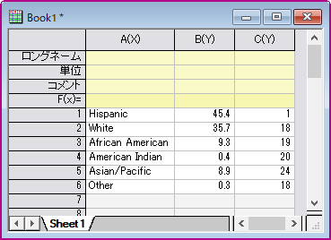
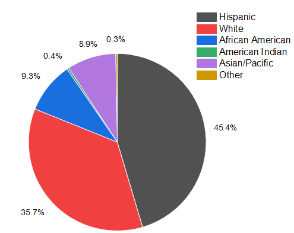
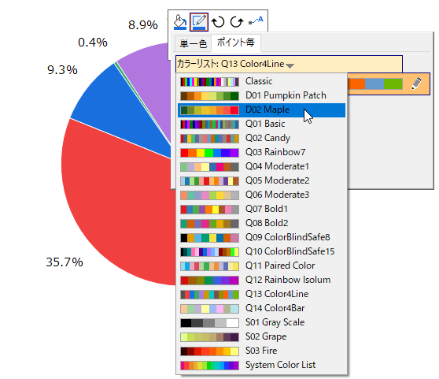
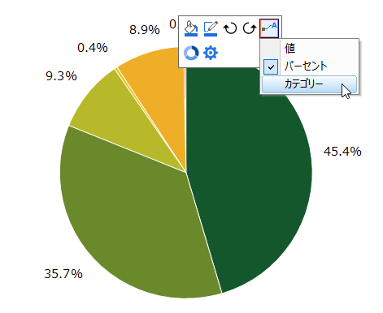
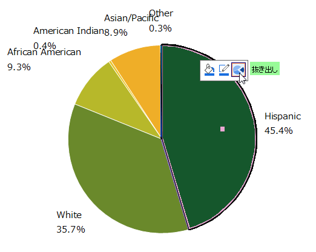
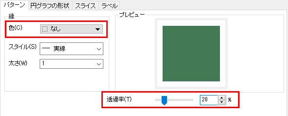
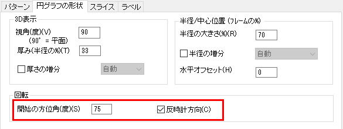
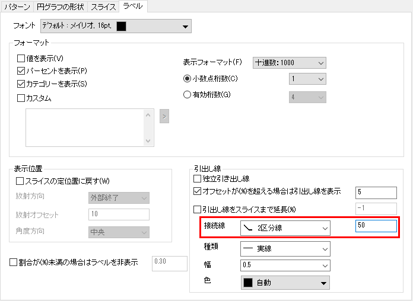

人口調査の2Dカラー円グラフ
2D-Pie-Chart
概要
このチュートリアルは、2D円グラフの作成の編集方法を示します。

必要なOriginのバージョン: Origin 2020 以降
学習する項目
このチュートリアルでは、以下の項目について説明します。
- 2Dカラー円グラフを作成
- ミニツールバーと作図の詳細ダイアログで円グラフを編集
ステップ
- 新しいワークシートを作成し、ここで表示されるサンプルデータを貼り付けます。
- 
- B列を選択して、メニューから作図 > 基本の2Dグラフ: 2Dカラー円グラフを選択して、2Dの円グラフを作成します。
- 
- 凡例をクリックして選択し、 Deleteキーを押して凡例を削除します。
ミニツールバーを使用して素早く編集
- 円グラフ上でクリックして、ミニツールバーが表示されたら塗り色ボタンをクリックします。ポイント毎タブのカラーチューザーで、カラーリストを「D02 Maple」にします。

- 選択したカラーリストが適用されます。再度ミニツールバーで、データラベルを表示ボタンをクリックして、ドロップダウンリストからカテゴリーを選択します。

- パーセントとカテゴリーの両方がスライスのラベルに表示されます。ウィンドウ内の何もない領域でクリックして、全プロットのミニツールバーを閉じます。
- 「Hispanic」のスライス切り離すために、このスライスを2度クリックしてミニツールバーを表示し、抜き出しボタンをクリックします。

作図の詳細でさらに編集
- 円グラフをダブルクリックして、作図の詳細ダイアログを開きます。パターンタブを開き、縁の色をなし に、透過率を20 に設定します。適用ボタンをクリックして設定を適用します。

- 円グラフの形状タブを開き、回転コントロールの開始の方位角(度)を75にし、反時計方向のチェックボックスにチェックを付けます。

ミニツールバーの時計回りに回転 、反時計回りに回転
、反時計回りに回転 ボタン（操作5の画像参照）を使って、円グラフを少しずつ回転させることもできます。一度クリックすると、円グラフは10度回転します。
ボタン（操作5の画像参照）を使って、円グラフを少しずつ回転させることもできます。一度クリックすると、円グラフは10度回転します。
- ラベルタブを開き、引出し線グループの接続線を2区分線 にし、パーセントの値を50にします。

- OKボタンをクリックして、ダイアログを閉じます。重なっているラベルをドラッグして移動します。グラフの上にタイトルを追加すると最終的に下図のようになります。
サンプルデータ
新しいワークシートを開き、このリンク(http://www.originlab.com/ftp/graph_gallery/data/2D_Pie_Chart.txt) をクリックしてブラウザのページからデータをコピーします。あるいは、下表のデータを選択してコピーしてください。
列Aの1行目の空データセルをクリックしてから、コピーしたデータを貼り付けます。
| A(X)
|
B(Y)
|
C(Y)
|
| Hispanic
|
45.4
|
1
|
| White
|
35.7
|
18
|
| African American
|
9.3
|
19
|
| American Indian
|
0.4
|
20
|
| Asian/Pacific
|
8.9
|
24
|
| Other
|
0.3
|
18
|